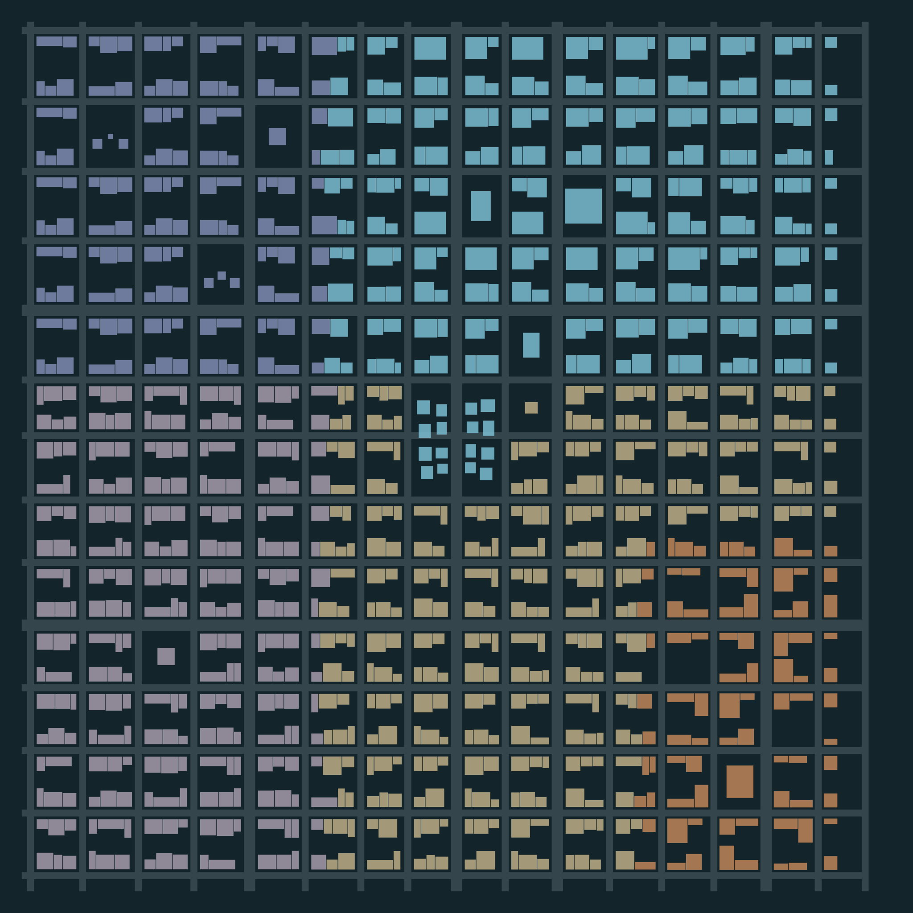

AEGIS / RISE OF THE TITAN · 12 OCTOBER 2026
Metropolis rebuild.
Actual browser evidence.
A saved 2048 × 2048 metre city: 971 buildings, 204 deliberate blocks, 25 complete source families and five district identities. Street surfaces, shared source-view HLOD, source-preserving near geometry, bounded local destruction and retained character/HUD/gameplay integration.
35 latest browser check outcomes pass17 unit checks passedProduction build passed31 non-world source files preservedSupplied originals preserved
Browser outcomes combine the full 35-case run with two focused passes after correcting the counter test's borderline distance. Original full-run report · Both focused repeats · Earlier complete 34-case pass. Claude's melee implementation is unchanged.
Review the images and recordings as the visual evidence. Functional tests do not establish a premium art finish. Remaining visual, download and simulation limits are listed below.
Saved master plan and audit
Ten biggest original problems · Design written before rebuilding · Fixed placement JSON · Blender master city

Saved district, road and landmark map
Fresh Chrome process per scene, 1280 × 720 viewport, DPR 1, 180 warm-up frames and six seconds of timed gameplay. LOW renders 1088 × 612; other tiers render 1280 × 720 on this DPR. Submitted triangles/draws include additional render passes. Source detail loads before timing; GPU memory point samples and errors are retained in raw JSON.
24 original samples · 24 rebuilt samples, GPU and memory counters · Comparison data
Supplemental 1920 × 1080 viewport pass, same method. LOW internal size 1632 × 918; other tiers 1920 × 1080. These are rebuilt-only samples.
All 12 native-resolution samples
Street, sidewalk, roof, skyline and district evidence
MEDIUM, 1600 × 900. The hero is hidden for these architecture photos; gameplay videos retain the character and HUD. Exact cameras and weather.
 downtown street
downtown street sidewalk detail
sidewalk detail source rooftop
source rooftop skyline aerial
skyline aerial gothic civic
gothic civic industrial
industrial rain at night
rain at night civic arcade
civic arcade roof traversal
roof traversal dawn
dawnMatched original → rebuilt cameras
Left: preserved pre-redesign source. Right: rebuilt MAIN game. Same camera, hour and weather. Some old close-up positions now lie inside different buildings; all ten comparisons are retained rather than substituted. Before manifest · After manifest.
night skyline
 Before
Before After
Afterday rooftop
 Before
Before After
Aftergothic street
 Before
Before After
Afterdowntown rain
 Before
Before After
Afterglass closeup
 Before
Before After
Aftergothic facade
 Before
Before After
Afterroof detail
 Before
Before After
Afterindustrial
 Before
Before After
Afteraltitude
 Before
Before After
Aftersunset
 Before
Before After
AfterActual walking, flight and LOW gameplay
Same positioning and input sequence on the preserved original and rebuilt city. Character/HUD visible. Recordings are evidence of behavior, not FPS measurements; video encoding adds overhead.
Intact → glass → wall → structure → collapse
Three source-derived buildings with actual render holes and local collision updates. Stage recordings use QA helpers to exercise the real component HP/support/cascade path. They are explicitly separate from the real keyboard weapon recordings below. Stage diagnostics and eviction/return records.
Crown Helix · modern glass skyscraper
 intact
intact windows
windows wall
wall structure
structure collapse
collapseSaint Vesper · Gothic landmark
 intact
intact windows
windows wall
wall structure
structure collapse
collapsePrism Exchange · authored Meridian Arcade commercial mid-rise
 intact
intact windows
windows wall
wall structure
structure collapse
collapseReal laser and shoulder-missile impacts
Actual L and F keyboard input; no direct damage calls. Intact state, impact flame/smoke and persistent source-section damage. Weapon/effect counters.
 glass intact
glass intact glass impact
glass impact glass smoke / flameglass real weapon inputOpen recording
glass smoke / flameglass real weapon inputOpen recording gothic intact
gothic intact gothic impact
gothic impact gothic smoke / flamegothic real weapon inputOpen recording
gothic smoke / flamegothic real weapon inputOpen recordingActual sources, exported GLBs and licenses
Redesign asset licenses and modifications · Full source and author attribution · All supplied asset inspection/license metadata · Runtime/footprint audit · Source preservation checks.
Architecture uses London/Singapore by 99.Miles, Aria by ChamberSu1996, Daniel Zhabotinsky's downtown/industrial sets and the Art Deco Citadel by Oneironauticus under CC BY 4.0. Street props by MadeByYeshe use CC BY 4.0. Original Meridian Arcade uses the Quaternius Downtown MegaKit under CC0. Unused supplied assets are retained, not redistributed in the package.
Standalone near/medium GLBs below contain embedded PBR. Runtime GLBs intentionally use tiny placeholders and load shared native BC3 DDS or WebP maps through the game's manifests. Open those through the game to see the full material appearance.
Editable authored street kit · Packed source-atlas LOD gallery · Nine embedded-PBR fracture GLBs · Retained CC0 license
Known limits and how to inspect
- This is a substantial source-asset city and destruction rebuild, not a claim of photorealistic or AAA art completion. Some standard pack facades use baked window details, trees/civilians remain stylized, and the saved street grid is still predominantly orthogonal.
- Near buildings use source geometry. Far buildings use five source-view alpha-tested cards; oblique views and transitions simplify depth and roof detail. Distant damage is a burned/height-adjusted approximation; actual section holes return nearby.
- Collapse is a support-triggered sector/floor cascade with a few source-shaped falling panels and pooled chips. It is not engineering stress analysis or rigid-body simulation of every floor. Four showcases permit full collapse; ordinary buildings support localized section damage.
- Damage persists during streaming and can be serialized. There is no new save-slot/UI persistence across browser reloads. Foundations, roads, bridge/deployment fixtures and civilians do not run full destruction logic.
- Traffic and civilians provide bounded local movement, rather than full traffic/pedestrian AI. Wet reflections are material and light-proxy approximations; no ray-traced reflections.
- The static package is 245.9 MiB including both DDS and WebP alternatives. Detailed assets load on demand. This remains a substantial download; platform SDK integration, mobile certification and a Poki/CrazyGames upload are not included.
- The benchmark is one isolated six-second sample per scene and tier on the installed GTX 750 Ti. It reports average and p95 frame time, not a guaranteed minimum FPS. Headless Chrome at DPR 1 does not exercise HIGH/ULTRA pixel ratios above 1. Windows memory readings are point samples including browser driver allocations.
From the workspace run npm.cmd run dev -- --host 127.0.0.1 --port 5192 and open the MAIN game. Deploy, skip the intro, then use E/Space/Shift for flight, T for suit change, F for shoulder missiles, Z for repulsors and L for the laser. Quality remains selectable in Settings. Architecture attribution is in Credits.
For exact demonstration views use /?qa=1 and the capture scripts. Ordinary URLs do not expose mutable QA hooks. Production packaging: npm.cmd run build, python scripts/city-redesign-asset-manifest.py, node scripts/city-redesign-package.mjs. Serve artifacts/city-redesign/deploy; exact runtime allowlist and size.
Implementation, files, validation and continuation notes · Latest 35-case browser outcomes · Production gameplay verification · Final validation summary.